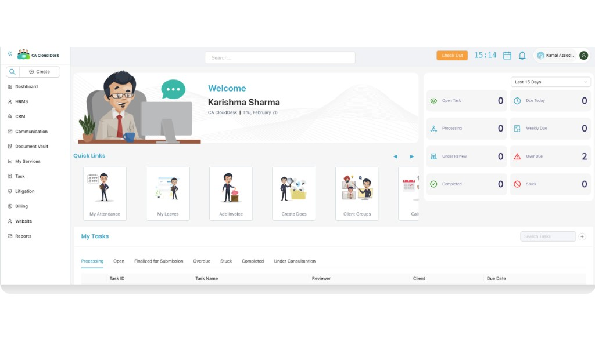
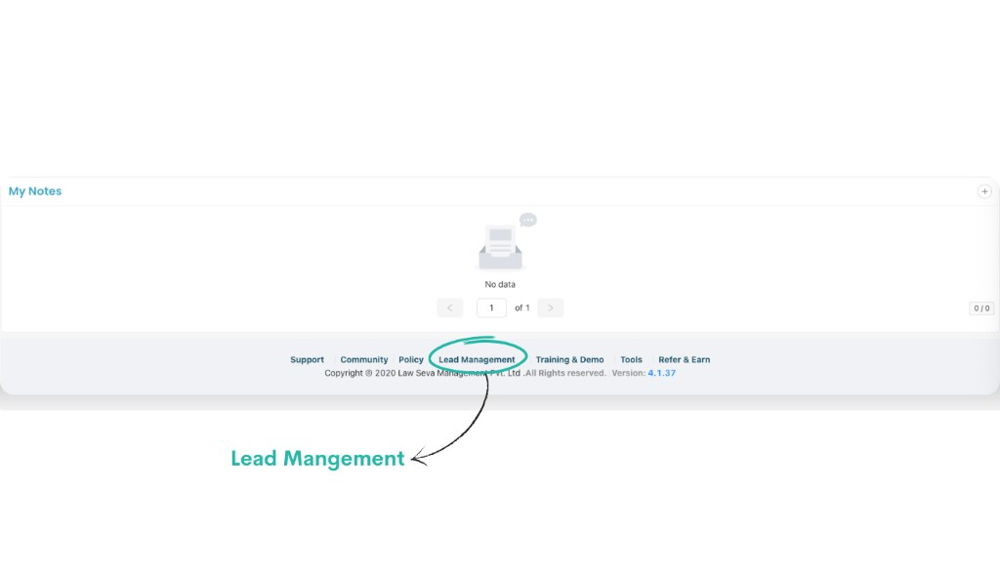
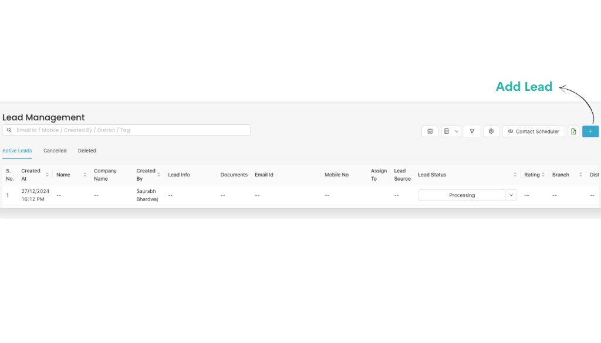
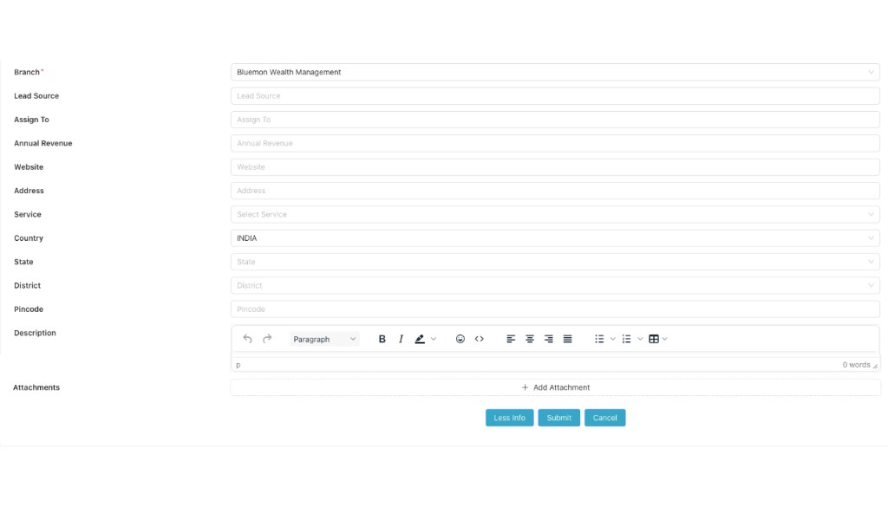

Lead Management (Marketing)
Use the Lead Management menu to capture and track enquiries from prospects — from first contact to conversion as a client.
Path
Log in to your CA CloudDesk Partner Desk. From the bottom navigation of the dashboard, click Lead Management to open the Lead Management module.


Lead Management tabs at a glance
On the Lead Management page you can see your leads grouped into three tabs:
- Active Leads — all open leads you are currently working on.
- Cancelled — leads that were cancelled or dropped.
- Deleted — leads removed from the active list.

Step 1 — Review Active Leads list
Open the Active Leads tab
When you open Lead Management, by default you are on the Active Leads tab. Here you can see each lead with Created At, Name, Company Name, Created By, Mobile No, Lead Source, Lead Status and other columns.
To add a new entry, click the + (Add Lead) button on the top-right.
Step 2 — Add Lead (basic information)
Fill the basic Lead Information
After you click the + button, the Add Lead form opens. Start with the basic Lead Information section.

Step 3 — More Info and additional fields
Click the More Info button
To capture detailed information about the lead, click the More Info button at the bottom of the Add Lead form. This expands extra fields.

Fill the additional fields as needed:
Step 4 — Submit and track the lead
Save the lead
After filling the basic and More Info sections, click Submit to save the lead. The record will now appear under Active Leads with the selected Lead Status and Assigned user.
If you want to stop without saving, use Cancel. You can later move leads to Cancelled or Deleted as per your workflow.